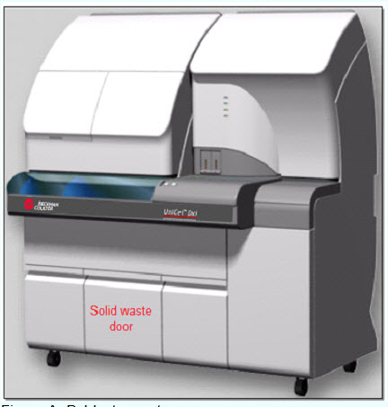
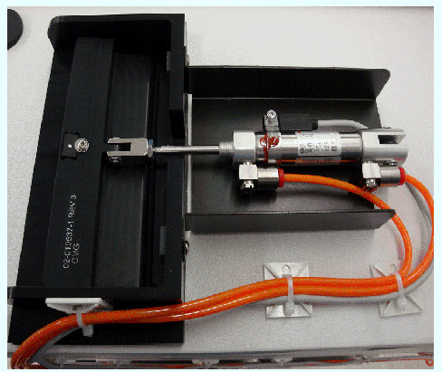

Adjusting Reagent Waste Door Sensor
This procedure describes how to adjust the reagent waste door sensor.
Required Materials:
- Laptop
- Crossover ethernet cable
- 3/32-in L-shaped allen wrench for new style sensor bracket
- Small Phillips head screw driver for old style sensor bracket
- Marker
- Bench-top mate or tissue
The adjustment for the reagent waste door sensor is to determine the center position of the sensor for accurate sensing. Perform this procedure when:
- the sensor fails to detect waste door is opened or closed.
- you replace the reagent waste door air cylinder.
Caution: This procedure requires work in the solid waste are, which contains hazardous waster materials. Wear appropriate PPE as required: Lab coat, gloves, and goggles.



-
Prepare the instrument.
-
Place a bench-top mate or tissue on the waste door to protect FSE from waste materials.

-
Look inside the solid waste area and locate the reagent waste door and air cylinder under the reagent storage.
Caution: Do not damage the solid waste door by laying on the door.

-
Place a bench-top mate or tissue on the waste door to protect FSE from waste materials.
-
Check the sensor on the reagent waste door.
-
Connect the crossover cable to the SPU ethernet port and the laptop ethernet port.

-
Select
WasteDoor, and then select
connect on the OutBit Test box.

-
Observe the reagent waste door functions.
Caution: Do not damage the solid waste door by laying on the door.
- If door fails to open or close, then:
- Check air pressure tubing.
- Check air pressure control valve.
- Check pressure regulator.
- Replace air cylinder.
Note: Refer to RS: Replacing Waste Door Air Cylinder procedure.
- If door sensor fails to detect open or close, then:
- Replace air cylinder.
Note: Refer to RS: Replacing Waste Door Air Cylinder procedure.
- Replace air cylinder.
- If door fails to open or close, then:
-
Connect the crossover cable to the SPU ethernet port and the laptop ethernet port.
-
Adjust the sensor on the reagent waste door.
-
Place the sensor at the marked center position.

-
Place the sensor at the marked center position.
-
Verify the proper operation of the waste door sensor.
-
Close the solid waste door.
- Exit Device Diagnostics and return to the Main Screen.
- Initialize the system.